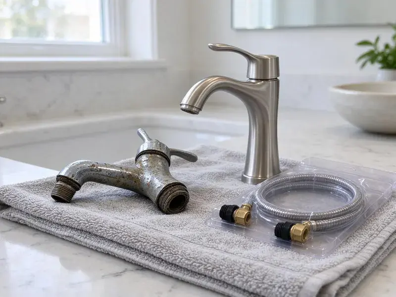

Well Pump Replacement in Draper, UT
We replace failed well pumps across Draper, UT with durable submersible pumps sized to your well depth and household demand.
- Fast, Local Service
- Utah Water Well Experts
- Expert Technicians
- Guaranteed Work

Restore Your Water Supply. Schedule Well Pump Replacement in Draper, UT.
Our licensed plumbers are ready to provide an accurate estimate and efficient well pump replacement.
Well Pump Replacement in Draper, UT for Deep and Shallow Wells
BPK Plumbing replaces submersible and jet pumps on private wells, including deep wells on rural properties. We pull the old pump, inspect the drop pipe and wire, and install a new pump sized to your well depth and water demand.
Our expertise includes:
- Years of Utah Well System Experience
- System Diagnostics and Sizing
- Submersible and Jet Pump Specialists

Additional Plumbing Replacement Services in Draper, UT
When repairs are no longer enough, our replacement services in Draper, UT deliver durable upgrades that restore full performance.


Customers
Why Choose BPK Plumbing for Well Pump Replacement in Draper, UT?
Choosing the right plumber for well pump replacement is essential for system longevity and performance. BPK Plumbing brings years of hands-on experience to every well pump project.
- Expert Installation, Our licensed plumbers have broad experience with well systems, for a correct and durable installation every time.
- Code Compliance, All our well pump replacements follow local Draper and Utah plumbing codes for your safety and peace of mind.
- Energy Efficiency, We install modern, energy-efficient well pumps that can help lower your electricity bills over time.
Citywide Coverage
We replace well pumps for homes and ranches in and around Draper, including properties far from paved roads. We bring equipment suited to deep wells and rough access.
Experienced Team
Our team understands pump curves, horsepower requirements and well yield. That knowledge helps us pick a pump that delivers reliable flow.
Safety-First Approach
Well pumps involve high-voltage wiring and heavy equipment, so we follow strict safety procedures. We disconnect power and use proper lifting gear.
Trusted Certified Draper Plumbing Services Professionals
At BPK Plumbing, we take pride in providing licensed, certified plumbing services throughout Draper, UT. Backed by recognized industry credentials, our experienced plumbers combine technical skill with genuine customer care. Whether it is repair, installation, or maintenance, we follow strict safety and quality standards to deliver long-lasting results you can trust.
Call Us Now PHCC Plumbing Contractor Recognition
PHCC Plumbing Contractor Recognition Better Business Bureau (BBB) Accreditation
Better Business Bureau (BBB) Accreditation Angi Certified Pro
Angi Certified Pro ISO 9001 Quality Management Certification
ISO 9001 Quality Management CertificationRobust Well Pump Replacement Services in Draper, UT
Well Pump Brands We Service in Draper, UT
We work with leading well pump manufacturers known for their durability and performance, including Grundfos, Franklin Electric, Goulds Pumps and Zoeller. Our experience with these brands means your replacement pump is a high-quality, reliable unit. We can also provide alternatives and upgrades to suit your needs and budget in Draper, UT.

Grundfos Well Pump Replacement in Draper, UT
Grundfos is a leading brand known for its dependable and energy-efficient well pumps. If your existing Grundfos pump has failed, or if you are looking for a quality replacement, BPK Plumbing installs a full range of Grundfos models. Our expertise means proper selection and installation of the correct Grundfos pump for your well's requirements in Draper, UT.
Well Pump Diagnosis and Sizing in Draper
Accurate diagnosis is essential to effective well pump replacement. We do not just replace a pump, we assess your entire well system, including the well depth, yield and your household's water demand. This allows us correctly size your new pump, preventing early failure and keeping enough water flowing to your home in Draper.
Solar Well Pump Systems in Draper, UT
Remote properties and livestock wells often benefit from solar-powered pumps. Solar can be a sensible option wherever a site gets steady sun. We install solar pump systems with controllers and storage tanks. These systems lower energy costs and work off-grid. We size panels and pumps to your water needs.
Well Pump Electrical Troubleshooting and Replacement in Draper, UT
Many well pump failures stem from electrical problems, such as faulty wiring, a tripped breaker or a burned-out motor. Our licensed plumbers are also experienced in electrical diagnostics related to well systems. We identify whether the issue is electrical or mechanical and, if necessary, replace the pump motor or the entire unit. All electrical components are left safe and up to code in Draper, UT.
Emergency Well Pump Replacement in Draper
A sudden well pump failure can leave you without water, creating an urgent emergency. BPK Plumbing offers emergency well pump replacement services to restore your water supply as quickly as possible. We understand the urgency, especially for rural homes around Draper that rely only on well water. We prioritize rapid response to get your system back online.
Agricultural and Ranch Well Pumps in Draper
Larger properties may need higher-horsepower pumps for irrigation or livestock. We replace pumps sized for higher flow and deeper wells. Three-phase pumps may require specialized controls. We coordinate with your schedule to limit downtime. We also check storage tanks and distribution lines.

Franklin Electric Well Pump Replacement in Draper
Franklin Electric pumps are another trusted name in the well water industry, offering durable solutions for various well depths. BPK Plumbing is experienced in replacing and installing Franklin Electric well pumps, including their submersible and jet pump lines. We make sure your new Franklin pump is correctly integrated into your existing system for strong performance and longevity in Draper.
Well Pump Replacement Near Me in Draper, UT
If you are searching for well pump replacement near me, you need a team with the right equipment and local knowledge. BPK Plumbing serves Draper and surrounding rural areas. We can respond quickly to no-water emergencies.
When you search for well pump replacement near me in Draper, UT, BPK Plumbing is your dependable local choice. We have a strong presence in the community, and our technicians are often just a short drive away, ready to address your well pump issues promptly. Our local knowledge means we understand the challenges wells can face in the area.
BPK Plumbing at a Glance
- Fully licensed plumbing team covering Draper, UT
- Same-day appointments and 24/7 emergency response
- Upfront, flat-rate pricing before work begins
- 4.8-star rated by 470+ Utah customers
Draper Map
Draper Information
- Population
- 49,602
- Area codes
- 801/435/385
- Service area
- Draper and communities within 40 miles
- Nearby
- Sandy, Lehi, South Jordan, Herriman
Well depth and changing water tables make proper well pump sizing and installation essential for homes in Draper, UT.
Expert Services
Trust our professionals for reliable BPK Plumbing solutions in Draper, UT.
Our Specialized Plumbing Services in Draper, UT
At BPK Plumbing, we provide a complete range of plumbing services across Draper, UT. From leak detection to full system installations, our team ensures fast, precise, and affordable service for both residential and commercial properties. Explore our core services below:


How Our Well Pump Replacement Process Works in Draper, UT
Our well pump replacement process is designed for efficiency and transparency, so you understand every step.
Request a Quote
Call (385) 543-4073 and tell us about your well and symptoms. We schedule a visit and diagnostic check.
Diagnose the System
We test controls, wiring and pressure tank. We confirm whether the pump needs replacement.
Pull and Replace
We pull the old pump and install the new one with new wire and pipe as needed. We test pressure and flow before leaving.
Frequently Asked Questions About Well Pump Replacement in Draper
Well pump replacement usually costs $1,800 to $4,500 depending on well depth and pump size. Deep wells or constant pressure systems can cost $4,000 to $8,000.
Manufacturer warranties typically range from 1 to 5 years. We also provide a labor warranty.
Yes, we often replace well pressure tanks alongside well pumps or as a standalone service. A properly functioning pressure tank is crucial for pump longevity and consistent water pressure. We assess your entire well system so all components work together efficiently.
Common signs of a failing well pump include no water, sputtering faucets, reduced water pressure, discolored water or unusually high electricity bills. If your pump runs constantly or cycles on and off too frequently, these are also signs that replacement may be necessary.
Regular maintenance, such as checking your well's water level, keeping the pressure tank air charge correct and fixing any leaks promptly, can extend your pump's life. Avoiding heavy water use and installing a good quality sediment filter can also reduce wear and tear on the pump.
Shallow well pumps, or jet pumps, are designed for wells where the water level is typically 25 feet or less from the pump, using suction to draw water. Deep well pumps, or submersible pumps, are placed directly in the water near the bottom of the well and push water up, suited for depths over 25 feet. Choosing the correct type is key for efficiency and performance.
Most well pumps last 8 to 15 years. Sediment, hard water and frequent cycling can cut lifespan.
BPK Plumbing installs and services a wide range of trusted well pump brands known for their durability and performance. These commonly include Grundfos, Franklin Electric, Goulds Pumps and Sta-Rite. We can recommend the best brand and model to suit your well's requirements.
What People Are Saying About Our Plumbing Experts?

James P.
Our commercial plumbing system had a leak under the sink, and BPK Plumbing handled it professionally. The plumbers arrived quickly and restored everything without disruption to our customers.
Commercial Plumbing · Lehi, UT
Sofia M.
Two new toilets installed in one visit, no mess left behind, and the tech even adjusted a faucet he noticed was dripping. Fair pricing and really friendly.
Toilet Installation · South Jordan, UT
Emily R.
I called BPK Plumbing for plumbing repair, and the technician was fast, polite, and thorough. They explained the problem clearly and fixed it the same day. I will definitely hire them again. Highly recommended!
Plumbing Repair · Lehi, UT
Patricia H.
We had a slab leak that two other companies could not find. BPK Plumbing located it in under an hour, explained our options, and the price matched the quote to the dollar.
Slab Leak Repair · West Jordan, UT
Daniel K.
A pipe burst at 11 pm and they actually answered. The plumber showed up within the hour, shut everything down, and had us back to normal the next morning. Could not ask for more.
Emergency Plumbing · Herriman, UT
Mark T.
When our office needed drain cleaning, BPK Plumbing provided quick, reliable service. The plumber arrived on time and made sure every drain flowed perfectly before leaving. Very satisfied.
Drain Cleaning · Draper, UT